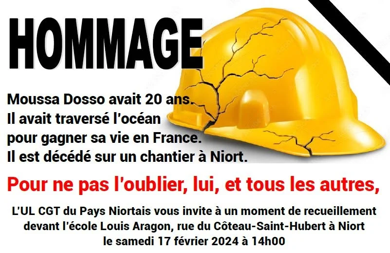

Annonce syndicale relayée
À Niort, la CGT appelle à rendre hommage à Moussa Dosso
Date de mise à jour indiquée par Facebook · 16 février 2024
Repères éditoriaux
Nous avons relayé l’invitation de l’union locale CGT du Pays niortais à rendre hommage à Moussa Dosso, mort sur un chantier, et à toutes les victimes du travail.
Texte de la publication · Union locale CGT du Pays niortais
Moussa Dosso avait 20 ans.
Il est décédé sur un chantier le 17 février 2022.
Nous vous invitons à lui rendre hommage ainsi qu'a tous les morts au travail le 17 février 2024 à 14h devant l'école Louis Aragon, rue du Coteau Saint Hubert à Niort.

Sources
Union locale CGT du Pays niortais · publication relayée par le PCF 79 · bibliothèque Facebook · AR-0002-FB-01477
À lire aussi · À Parthenay, solidarité avec les militants convoqués à la gendarmerie · Le lien d’origine